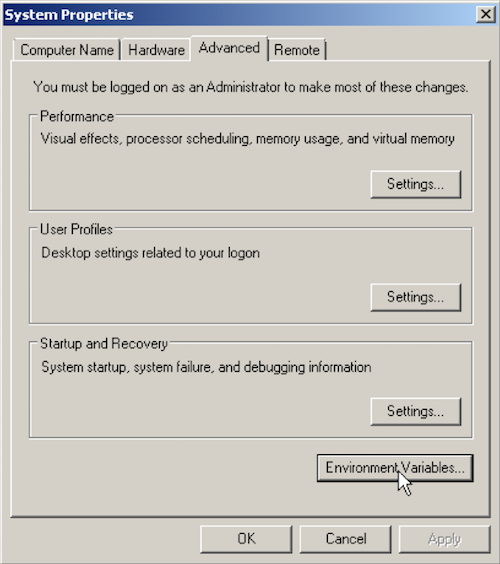
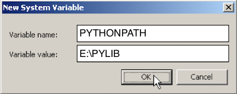

Set-up Instructions
This library was designed for use in schools - it therefore doesn't require installation.
Instead, it just needs to be DOWNLOADED and unzipped somewhere accessible by the relevant users.
Single-user Set-up
If you're just programming on your own PC, copy the appJar folder into your code folder, and you're done!
(As long as it's in the same folder as your code, it'll work...)
Multi-user Set-up
If you're in a school, this will still work, but there are alternatives...
(Or, to make it accessible from any folder at home)
- Create a folder on a shared network drive:
E:\PYLIB, that all pupils can see - Put the appJar folder in there, and you're done!
Just include the following at the top of every GUI program:
# add the appJar folder to your PATH
import sys
sys.path.append("E:\PYLIB")
(not so) Advanced Set-up
If you've got friendy technicians, or are at home, you can make this even more accessible...
Windows
Create an environment variable, which will mean E:\PYLIB is always in your path.
Then you don't even need the two lines above to make it work...
- Open Control Panel
- Navigate to System -> Advanced System Settings

- Click the Advanced tab 
- Under System vartiables, click the New.. button

- Set the Variable name: to be PYTHONPATH
- Set the Variable value: as the folder you put appJar in (eg. "E:\PYLIB") 
- Press OK, and you're done!
Linux (Raspberry Pi)
Linux requires command line access:
- Launch a Terminal
- Type the following:
echo 'export PYTHONPATH="${PYTHONPATH}:~/Documents/PYLIB"' >> ~/.bashrc
- Close the terminal, and you're done!
MAC OS
If you're just running python from a Terminal, then you can follow the Linux instructions above.
However, that won't work if you're running Python in a Desktop app, like IDLE.
In this case, you'll need to add appJar to your site-packages.
- Launch a Terminal
- Type the following:
mkdir -p ~/Library/Python/3.4/lib/python/site-packages
cd ~/Library/Python/3.4/lib/python/site-packages
echo '~/Documents/PYLIB' > appJar.pth
- Close the terminal, and you're done!
NB. you'll need to make sure the version number (3.4) is correct.
- To check your version, run this in Python:
import sys
print(sys.version)